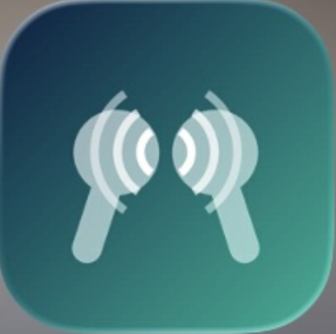

Two consumer apps, one custom-build practice, and one decision-support engine. Everything we ship shares the same DNA: clarity, reliability, and respect for the user's time.
We're not ready to reveal Sureto just yet — but when we do, it will be worth the wait. We promise.
Coming to iPhone and Android.

AirChat is still under wraps — we're keeping this one quiet a little longer. It will be worth it. We promise.
Coming to iPhone and Android.
We design and build custom scientific databases and registries around your protocol — not the other way around. From multi-site clinical registries to laboratory data systems, each build includes structured data capture with validation at entry, role-based access, audit trails, and the exports your statisticians actually want.
A configurable engine that estimates the total cost and cost per DALY averted of a health program — pediatric cardiac surgery, hemodialysis, or any service line — and compares it against WHO willingness-to-pay thresholds. Officials can adjust every line item to local prices and see results update instantly.